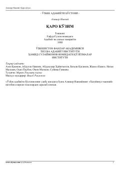

QKAlisher Navoiyning ishq va sadoqat mavzusidagi saralangan g'azallari to'plami.
Ushbu to'plam buyuk o'zbek shoiri Alisher Navoiyning «Xazoyinul-maoniy» devonidan saralab olingan g'azallarni o'z ichiga oladi. Kitobda shoirning ishq, sadoqat va insoniy tuyg'ularni tarannum etuvchi mumtoz she'riyati jamlangan.